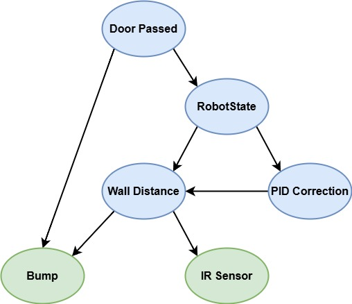

Team Description
Created by: Jolie Elliott, Samuel Boddepalli, and CJ Ajabor
Project Description
This project involves developing a sensor fusion module for a robot that uses a Bayesian Network to decide:
- Whether it has just passed by a door (10cm ago)
- Its actual distance from the wall as a probability distribution
The robot uses its onboard sensors for continuous data collection while moving along a wall. The Bayesian Network processes this sensor data to
make real-time decisions based on a set of Conditional Probability Tables (CPTs) learned from measurements collected by the robot.
iCreate3 Robot Description

The iRobot Create3 is a programmable robot designed for research and educational
purposes, providing a platform for exploring robotics concepts. The robot is compatible
with ROS 2 (Robot Operating System) and can connect to Wifi or Low-Energy Bluetooth.
iRobot also hosts several important libraries that are available on Github, providing important functions for operating the robot.
Here’s a summary of its key sensors:
- 7 x Infrared Sensors (IR)
- 4 x Cliff Sensors (IR)
- 2 x Bumper Sensors
- Optical Wheel Encoders (wheel speed & distance traveled)
- Charging Contacts & Docking Sensor
Bayesian Network Description

The Bayesian Network comprises key variables representing its sensor readings,
distance to the wall, its current state, and whether a door was passed.
The CPTs are learned from the data obtained during multiple tests where all
variables (observable and unobservable) are recorded and provide probabilistic
estimates for each variable’s state.
Variables
- Door Passed [True, False]: Whether or not a door was passed 10 cm ago
- RobotState: Indicates which state the robot is in
- Wall Following
- Entering Door Frame
- Exiting Door Frame
- Wall Distance [Close, Moderate, Far]: Indicates approximate ditance between robot and a wall to its right.
- Bump [True, False]: Indicates whether a bump or collision occurred
- IR Sensor [Low, Medium, High]: Indicates reflectometer reading from right-hand side of robot. Lighter-coloered objects will be registered better than dark.
Source Code & Dependencies
This code was written using VSCode. Originally, the Web Developement website was
employed to connect to the robot and upload code remotely, but debugging is limited on the website.
To be able to run this code, Visual Studio and Microsoft C++ Build Tools must be installed, as well as python (linked below).
Final CPTs and Downloadable Files
The final CPTs used in the Bayesian Network are based on data from various robot experiments and represent the conditional probabilities for each state. These CPT values are available for review:
The final CPTs used in the Bayesian Network are based on data from various robot experiments and represent the conditional probabilities for each state. These CPT values are available for review:
| Distance Changed Bump |
P(Door Passed) |
| True True |
1.00 |
| False True |
0.40 |
| True False |
1.00 |
| False False |
0.15 |
Thank You For Your Attention!
"Programming is 10% writing code and 90% Wondering why it isn't working"